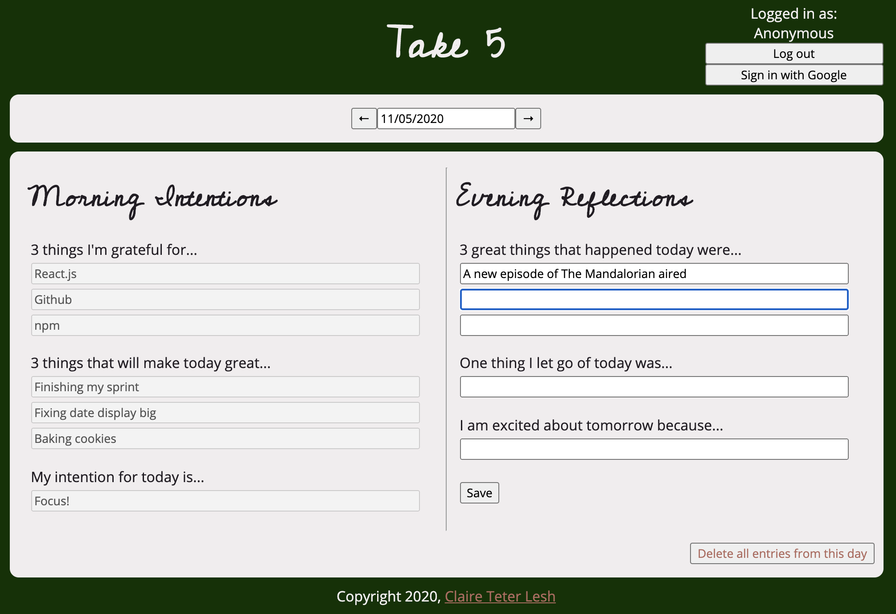
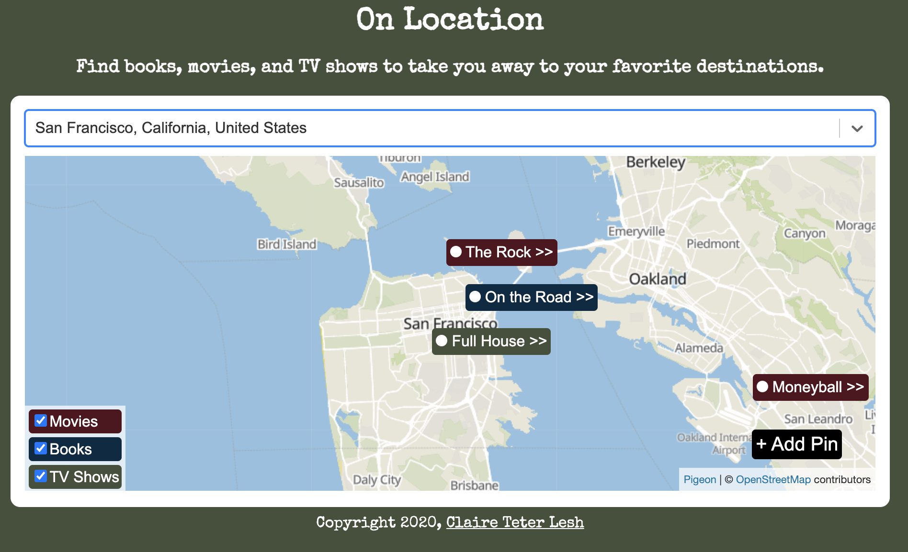
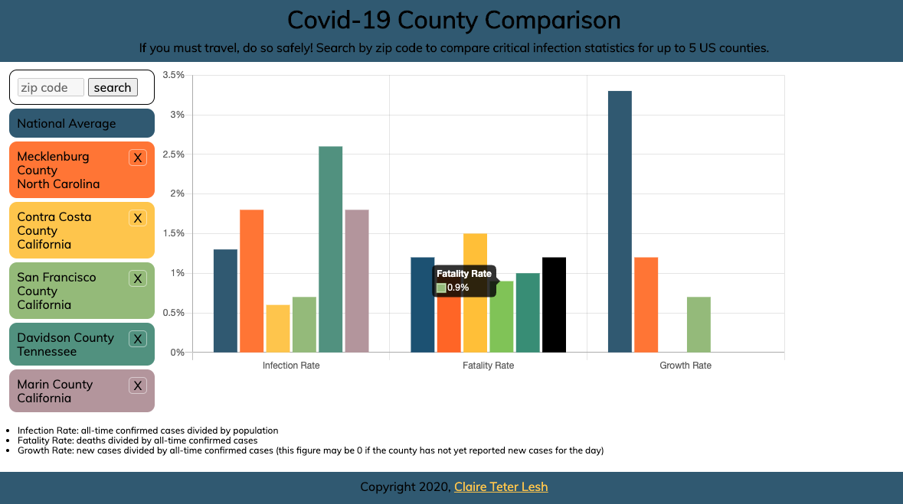

Hi, I'm Claire!
I'm a full-stack web developer located in Marin County, California. As a former product manager, I understand how to create thoughtful, effective, and functional web products from concept to production.
I have worked at small startups with 4 to 300 people, so I know how to move quickly and provide structure for the chaos of early-stage tech companies. As a web developer with this background, I understand my projects' broader business scope, and I know how to prioritize, communicate, and get stuff done.
About Me
I first entered the world of technology at a small advertising startup in 2011. After starting as a business generalist (there were only 12 of us), I grew into a role as a product manager conceptualizing and implementing web dashboards for advertisers. Ever since college, I regretted missing the opportunity to become a software developer, so I was thrilled when I joined the web development team and learned the trade while on the job.
I left the technology sector in 2015 to work for my family's small business in the hospitality industry. Now I'm ready to get back to the technology I love while bringing back management & problem-solving experience. I can't wait to work with a team of talented programmers who share my enthusiasm.
In my free time, I'm a serial traveler who knows her way around power tools and loves her doge named Starbuck.
I offer services in...
- HTML & CSS
- JavaScript & Backbone.js
- Python (including Flask & Tornado frameworks)
- Google Apps Script
Portfolio
Take 5
Take 5 is a full-stack journaling app that guides users to set their intentions every morning and practice gratitude in the evenings. I built it to replace a pen-and-paper journal I kept for myself. It is built using React and Node, and Firebase.

On Location
On Location is a full-stack search app that helps users find books, movies, and tv shows in a given location. I built it for travelers who want to read and watch content about their location before they get there. It is built using React, Node, and PostgreSQL.
Covid-19 County Comparison Tool
This is a tool that allows users to compare critical Covid-19 infection statistics across United States counties to make more informed decisions before traveling. It is built in HTML, JavaScript, CSS, and jQuery. (Unfortunately, this app is no longer live, as the data API it used has shut down.)
Contact Me
Please reach out to me with collaboration opportunities (or doge memes)!
- GitHub
- Email me at cteterita@gmail.com, or use the form below